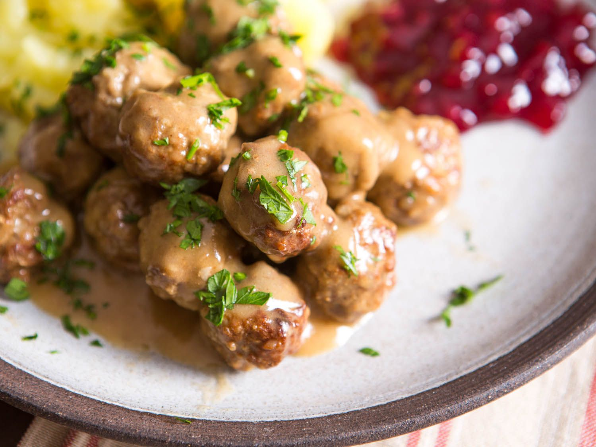

Swedish Meatballs

Swedish meatballs, stars of 1960s-era cocktail parties and IKEA shopping trips, are, on the surface, pretty simple: a mix of pork and beef that's lightly spiced and served with a rich gravy.
Ingredients
- 3 ounces (80g) fresh white bread, crusts removed, bread cut into 1/2-inch pieces (about 1 3/4 unpacked cups)
- 1/2 cup (120ml) milk
- 5 tablespoons (75g) unsalted butter, divided
- 1 medium onion, minced or grated, divided
- 1 pound 4 ounces (560g) ground beef chuck (about 20% fat)
- 12 ounces (340g) ground pork (about 25% fat)
- 4 teaspoons (18g) kosher salt, plus more for seasoning
- 2 large eggs
- 1/4 teaspoon ground white pepper, plus more for seasoning
- 1/8 teaspoon ground allspice
- Canola or vegetable oil, for frying
- 3 tablespoons (45g) flour
- 2 cups (480ml) chicken stock
- 1 teaspoon (5ml) soy sauce
- 1/2 teaspoon apple cider vinegar
- Minced flat-leaf parsley, to garnish
- Buttered boiled potatoes and lingonberry jam, for serving (optional)
Steps
- In a medium bowl, combine bread with milk, tossing to coat. Let stand until bread is completely softened and most of the milk has been absorbed, about 10 minutes.
- Meanwhile, in a small skillet, melt 2 tablespoons (30g) butter over medium-high heat. Add half of minced onion and cook, stirring, until onion is golden and tender, about 7 minutes.
- In a stand mixer fitted with the paddle attachment, or in a food processor, combine ground beef, ground pork, soaked bread and any remaining milk, cooked onion, remaining raw onion, 4 teaspoons salt, eggs, white pepper, and allspice. Starting on low speed and increasing to medium-high, beat mixture until ingredients are thoroughly combined, about 30 seconds to 1 minute.
- Line a baking sheet with parchment paper. Dipping your hands in water as needed to prevent meatball mixture from sticking, roll roughly tablespoon-sized portions of meatball mixture into balls slightly smaller than golf-ball size. Transfer to lined baking sheet.
- Set a rack over a clean baking sheet and heat oven to 200°F (90°C). Heat about 1/2 inch oil in a wide skillet to 350°F (177°C). Working in batches, lower meatballs into oil and fry, turning until well browned all over, about 2 minutes. Transfer browned meatballs to rack and keep warm in the oven.
- In a medium saucepan, melt remaining 3 tablespoons (45g) butter over medium-high heat until foamy. Whisk in flour and cook, whisking, until raw flour smell is gone, about 3 minutes. Whisk in chicken stock, bring to a boil, lower heat to a simmer, and cook until thickened, about 3 minutes. Whisk in soy sauce and cider vinegar. Season with salt and white pepper.
- Add meatballs to gravy and stir to coat. Simmer until meatballs are heated through. Serve right away with buttered potatoes and lingonberry jam, or speared with toothpicks as an hors d'oeuvre.